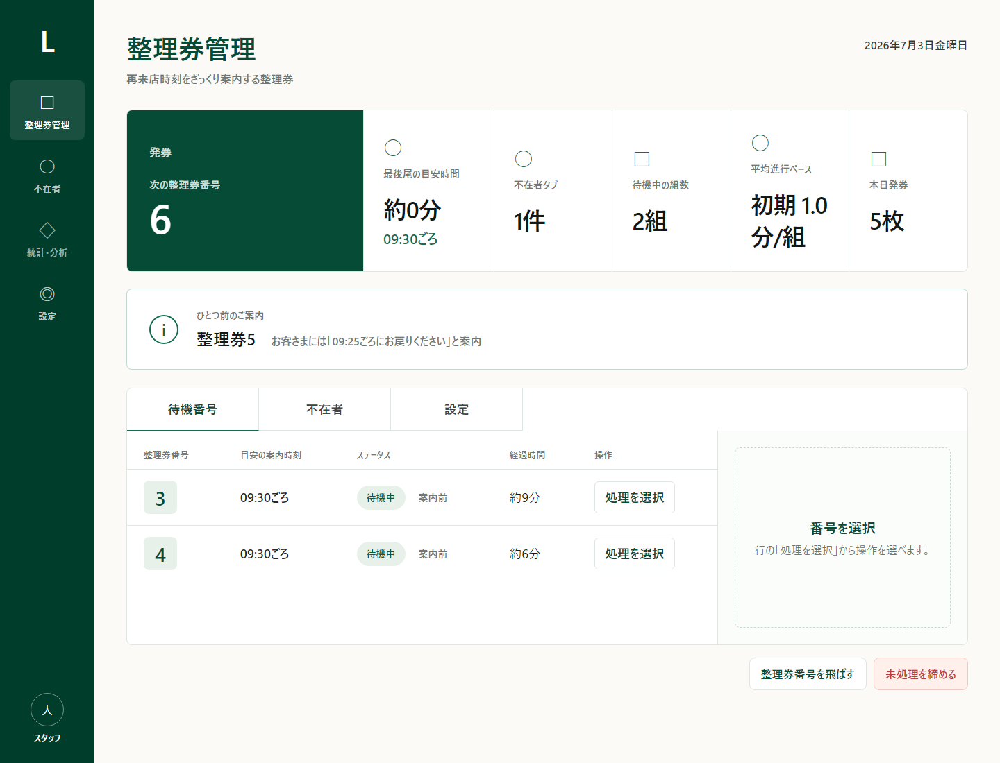
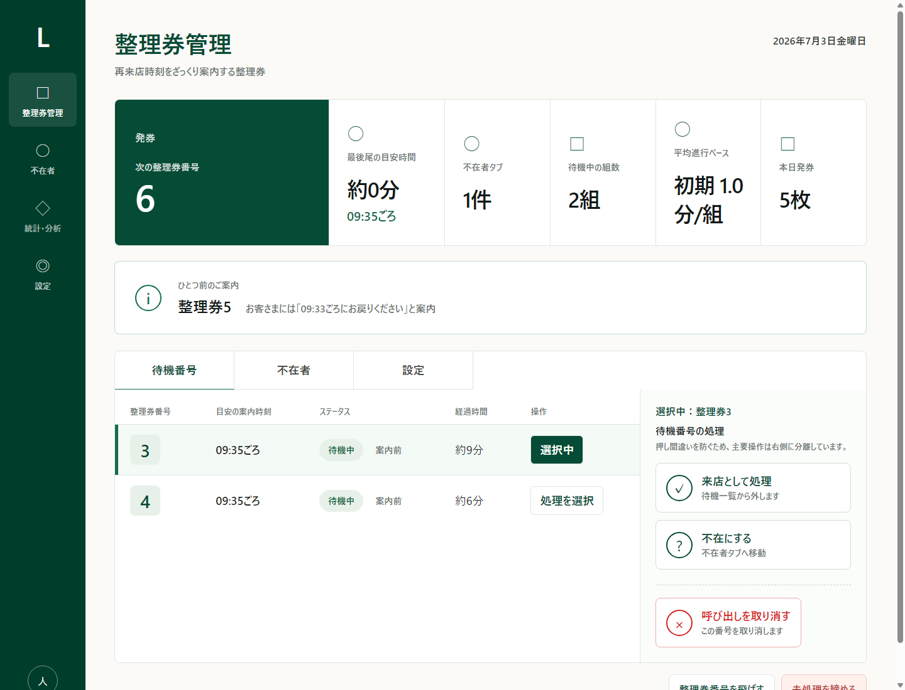
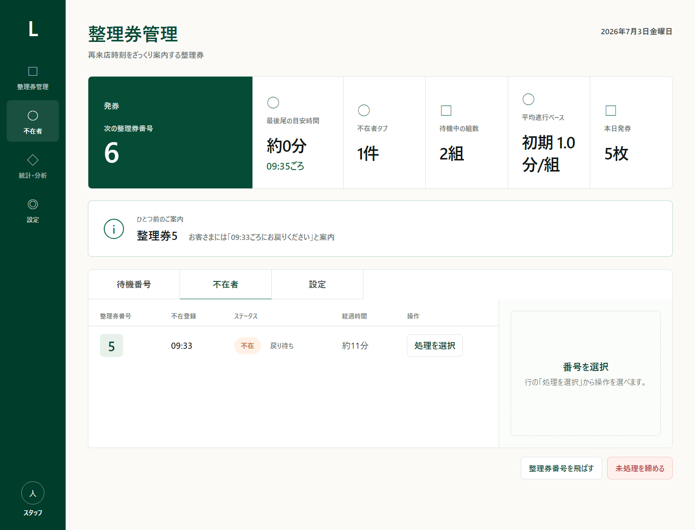
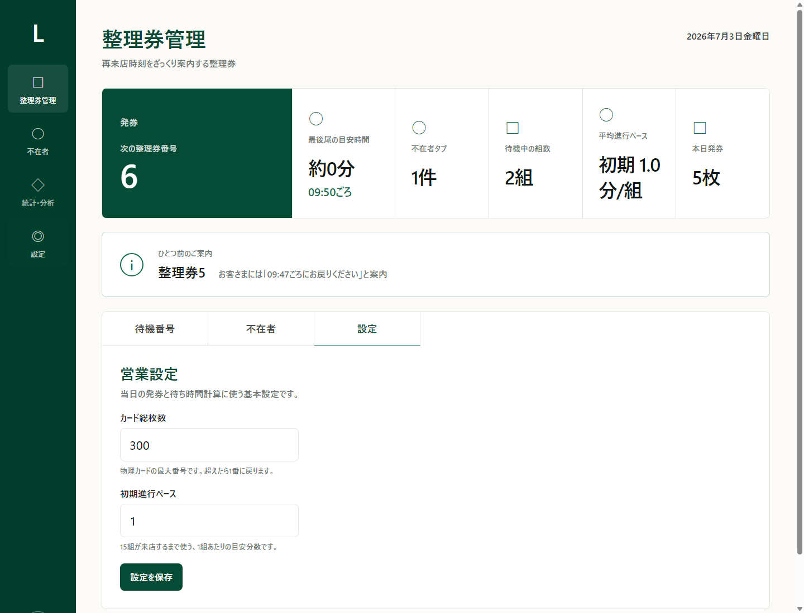
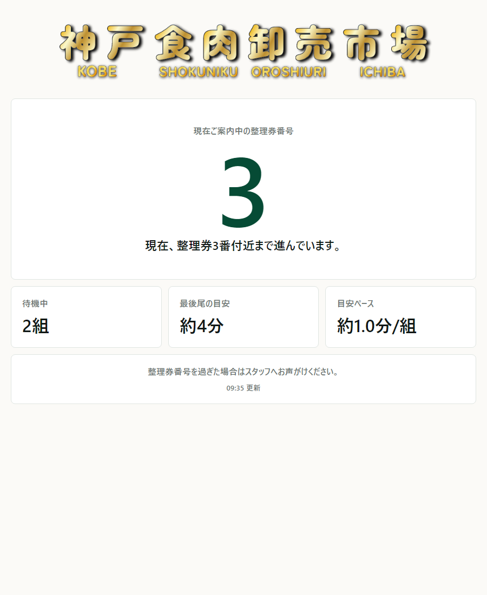

整理券管理システム 操作マニュアル
店頭で整理券を配り、再来店の目安時間を案内するための簡易マニュアルです。 お客さまへ伝える番号は、すべて「整理券番号」です。
難しい操作はありません。発券して、来店した番号を選び、必要なら不在にするだけです。
1. 管理画面の見方
管理画面では、次に渡す整理券番号、最後尾の目安時間、不在者、待機中の組数を確認できます。

管理画面トップ。発券ボタンと待機番号一覧を中心に使います。
次に渡す物理カードの番号です。カード総枚数を超えると1番に戻ります。
今発券した場合、お客さまへ伝えるおおよその戻り時間です。
2. 当日の準備
- iPadで管理画面を開きます。
- パスワードを求められたら、管理用パスワードを入力します。
- 設定画面で「カード総枚数」と「初期進行ペース」を確認します。
- 必要があれば、設定を保存します。
9:00前に発券しても、9:00開店後に案内される前提で目安時間が出ます。 8番目以降は9:15ごろからの案内として計算されます。
3. 発券する
- お客さまに渡す整理券カードを用意します。
- 管理画面左上の「発券」を押します。
- 表示された整理券番号のカードを渡します。
- 画面に表示される目安時刻を伝えます。
「整理券5番です。9:35ごろにお戻りください。」
4. 来店・不在・取消
待機番号一覧から対象の整理券番号を選ぶと、右側に操作ボタンが出ます。

対象行の「処理を選択」を押すと、来店・不在・取消の操作ができます。
来店として処理
お客さまが戻ってきたら「来店として処理」を押します。待機一覧から外れ、カード回収済みになります。
不在にする
呼び出しても来ていない場合は「不在にする」を押します。不在者タブへ移動します。
呼び出しを取り消す
押し間違いなどで番号自体を取り消す場合だけ使います。通常はあまり使いません。
5. 不在者の対応
不在にした番号は「不在者」タブに入ります。あとから戻ってきた場合は、その番号を選んで来店処理できます。

不在者タブ。戻ってきたお客さまはここから来店処理します。
6. 設定画面
設定では、カード総枚数と初期進行ペースを変更できます。

設定画面。基本的には営業前に確認します。
- カード総枚数: 物理カードの最大番号です。300枚なら300。
- 初期進行ペース: 15組が来店するまで使う、1組あたりの目安分数です。
カード総枚数を営業中に変えると、次に出る整理券番号が分かりにくくなることがあります。
7. 客用ページ
お客さまはQRコードから客用ページを見ます。表示されるのは、現在案内中の整理券番号と待ち時間の目安です。

客用ページ。お客さまには「ざっくり今どの辺か」を見てもらいます。
- 客用ページは自動更新されます。
- Supabase無料枠を守るため、更新は控えめです。
- 表示が数分遅れることがあります。厳密な呼び出し番号ではなく目安として案内してください。
8. 営業終了時
- 営業終了後、必要に応じて「未処理を締める」を押します。
- 待機中・不在の番号が締められます。
- 履歴データは残ります。分析用に使うため、通常は削除しません。
客用ページは自動で「本日の受付は終了しました」の表示になります。
9. 技術メモと注意点
ここからは管理担当者・保守担当者向けです。現場スタッフ全員が覚える必要はありません。
Supabase無料アカウントの注意点
- 無料枠にはリクエスト数やデータベース利用量の制限があります。
- 客用ページを開きっぱなしにするとAPIアクセスが増えます。現在は更新頻度をかなり抑えています。
- 17:00以降の客用ページは、Supabaseを読まずに受付終了を返す設計です。
- テストデータを消す場合は、Supabase SQL Editorで
delete from tickets;とdelete from daily_settings;を実行します。 - DBを作り直した場合は、
supabase/schema.sqlをSQL Editorで実行します。
Supabaseで詰まりやすいところ
- URL間違い: Vercelの
SUPABASE_URLはhttps://xxxx.supabase.coの形です。 - キー間違い: Vercelの
SUPABASE_SERVICE_ROLE_KEYはSecret keyを入れます。Publishable keyではありません。 - SQL未実行: 新しいSupabaseに変えたら、必ず
schema.sqlを実行します。 - issue_ticketがない: 発券時に関数が見つからないエラーが出る場合、SQLの最後まで実行できていない可能性があります。
- RLS警告: SQL Editorで警告が出ても、今回のアプリはVercel側のサーバーからSecret keyでアクセスします。
Vercel無料アカウントの注意点
- GitHubへPushするとVercelが自動デプロイします。
- 環境変数を変更したら、必ずRedeployが必要です。
- 無料枠では、しばらくアクセスがない後の初回表示が少し遅くなることがあります。
- 管理画面のパスワードはVercel環境変数
ADMIN_TOKENです。 - Production環境に環境変数が入っているか確認してください。
Vercelで詰まりやすいところ
- ADMIN_TOKEN未設定: 管理画面に「環境変数ADMIN_TOKENが未設定」と出ます。
- 古い環境変数のまま: 設定後にRedeployしていない可能性があります。
- Supabase切替後につながらない:
SUPABASE_URLとSUPABASE_SERVICE_ROLE_KEYを新しいプロジェクトのものに変えてください。 - 客用ページが少し古い: 無料枠対策でキャッシュを使っています。数分の遅れは仕様です。
sb_secret_... で始まるキーはVercelのEnvironment Variablesだけに入れます。
GitHub、HTML、JavaScript、QRコード、印刷物には載せません。